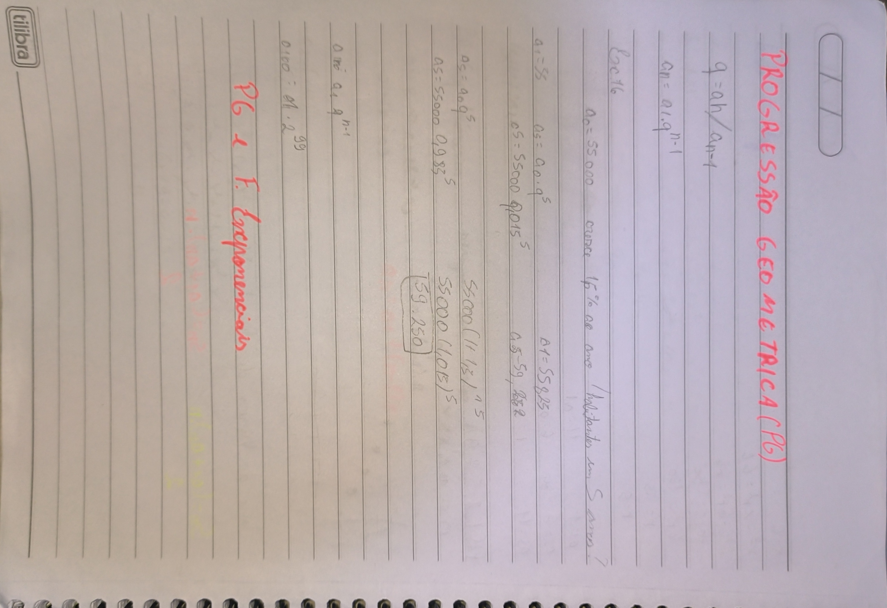

Para descobrir a razao é necessario dividir dois valores um perto do outro:
r = an / an-1
PG Cresecente:
- PG com termos positivos: r > 1.
- PG com termos negativos: 0 < r < 1.
PG Constante:
- PG com todos os termos nulos: 𝑎1 = 0 𝑒 𝑞 𝑞𝑢𝑎𝑙𝑞𝑢𝑒𝑟.
- PG com termos iguais e não nulos: 𝑎 ≠ 0 𝑒 r = 1.
PG Decrescente:
- PG com termos positivos: 0 < r < 1
- PG com termos negativos: r > 1
- Alternantes: cada termo tem sinal contrário ao do termo anterior. Isso ocorre quando r < 0.
- Estacionárias: Apenas o primeiro termo é diferente de zero: 𝑎1 ≠ 0 𝑒 r = 0.
Termo geral
an = a1 ∙ rn-1
Soma de termos de PG finita
Sn = a1 * 1-rn / 1-r
Soma dos termos de uma PG infinita, quando -1 < r < 1.